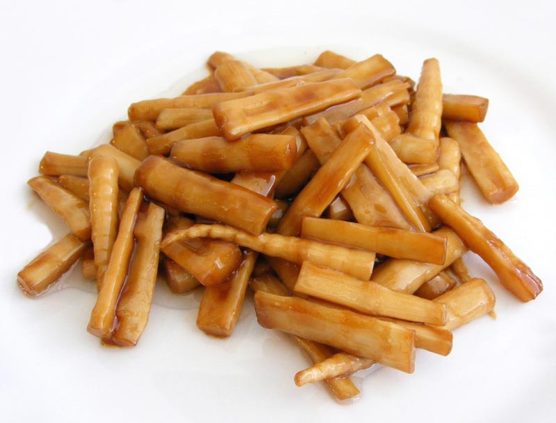

Bamboo Shoot

Description
A simple bamboo shoot recipe- braised bamboo shoots with soy sauce and sugar. This is just the season for bamboo shoots. Bamboo shoot is a magic ingredient that can be used in soups, stir-fries, stews, hot pots, salads, and pickles
Bamboo shoots, also known as bamboo sprouts, are the newly emerging and edible culms of bamboo plants, which are a type of grass. These young shoots are a popular ingredient in many Asian dishes, as they have a unique tender-crisp texture and a delicate flavor that pairs well with spices and other ingredients. Bamboo shoots are low in calories and carbohydrates but high in fiber, making them a healthy addition to any meal. They also contain various minerals and vitamins, including potassium, calcium, and vitamin B6.
Ingredients needed
- 250 g bamboo shoot , pre-treated with boiling and soaking or you can use packaged ones.
- 2 tbsp. soy sauce (1.5 tbsp. light soy sauce + 0.5 tbsp. dark soy sauce)
- 2 tbsp. rock sugar
- 1 tsp. sesame oil
Steps
- How to prepare fresh bamboo shoot for cookingCut the bamboo shoot into smaller pieces.Bring a large pot of water to a boiling and then place the bamboo shoots in.Cook for 4-5 minutes (or 7-8 minutes for larger pieces). Transfer out and then soak in clean water for at least 10 hours. Change the water twice during this soaking process. This helps to remove the bitter taste (possibly contained in fresh bamboo shoots ) of the fresh bamboo shoots
- Heat oil over fire with high fire and then place bamboo shoot in, fry for 1 minute until slightly softened.
- Add soy sauce and sugar. Cover the lid and slow down the fire and simmer for another 4 minutes. Uncover and continue cooking for a while until the sauce are almost attached to the bamboo shoots.
Home